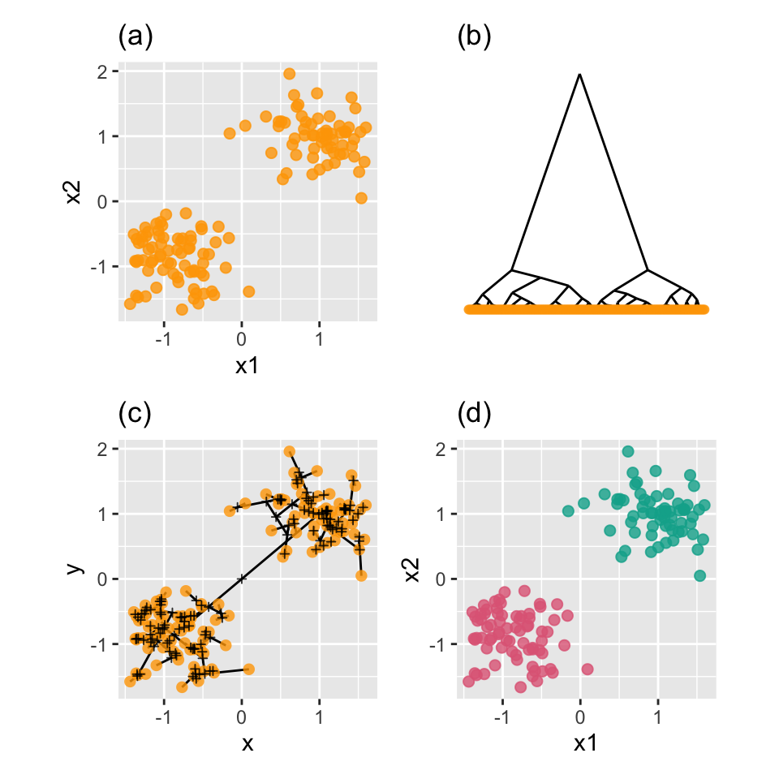
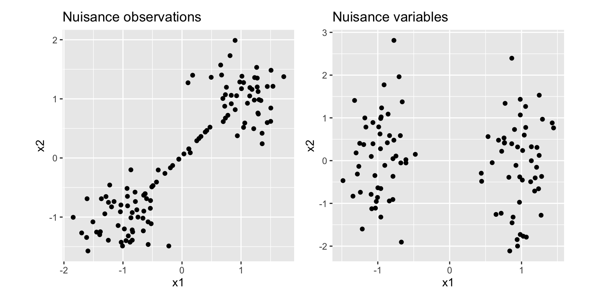
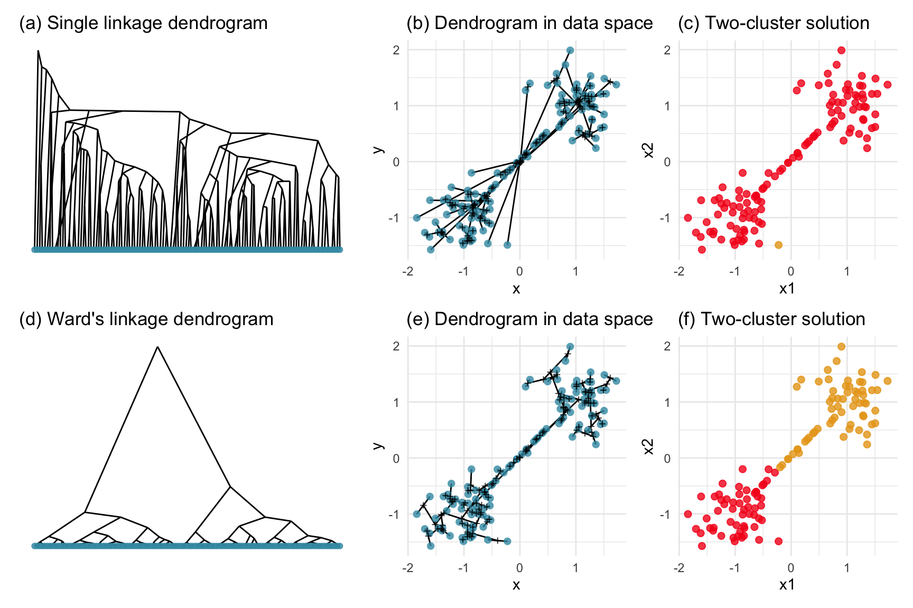
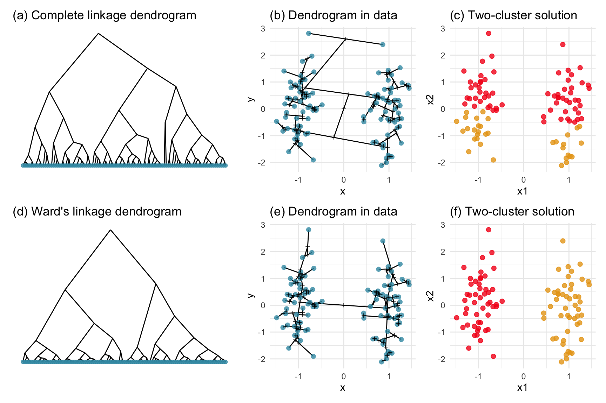
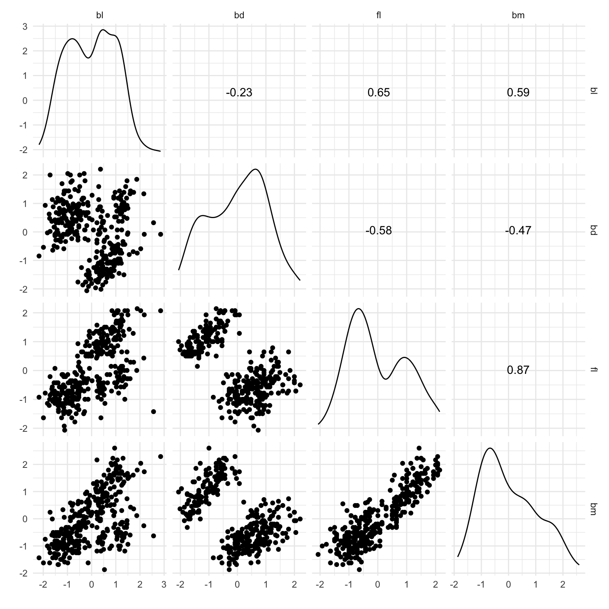
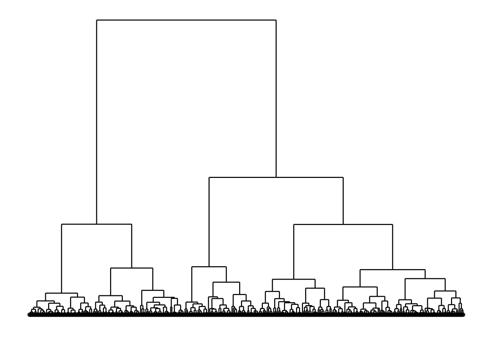
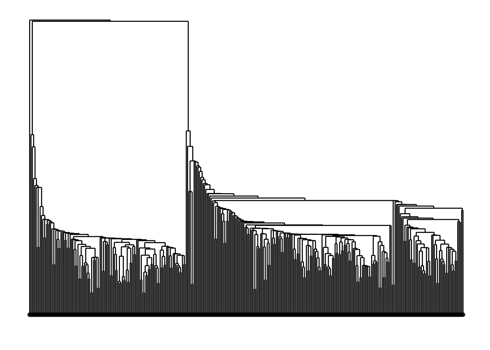

Load libraries
library(ggplot2)
library(mulgar)
library(ggdendro)
library(dplyr)
library(patchwork)
library(tourr)
library(plotly)
library(htmlwidgets)
library(colorspace)
library(GGally)
Hierarchical cluster algorithms sequentially fuse neighboring points to form ever-larger clusters, starting from a full interpoint distance matrix. Distance between clusters is described by a “linkage method”, of which there are many. For example, single linkage measures the distance between clusters by the smallest interpoint distance between the members of the two clusters clusters, complete linkage uses the maximum interpoint distance, and average linkage uses the average of the interpoint distances. Wards linkage, which usually produces the best clustering solutions, defines the distance as the reduction in the within-group variance. A good discussion on cluster analysis and linkage can be found in Boehmke & Greenwell (2019), on Wikipedia or any multivariate textbook.
Hierarchical clustering is summarised by a dendrogram, which sequentially shows points being joined to form a cluster, with the corresponding distances.
Here we will take a look at hierarchical clustering, using Wards linkage, on the simple_clusters data. The steps taken are to:
dendro_data function from the ggdendro package.hierfly function in mulgar.library(ggplot2)
library(mulgar)
library(ggdendro)
library(dplyr)
library(patchwork)
library(tourr)
library(plotly)
library(htmlwidgets)
library(colorspace)
library(GGally)data(simple_clusters)
# Compute hierarchical clustering with Ward's linkage
cl_hw <- hclust(dist(simple_clusters[,1:2]),
method="ward.D2")
cl_ggd <- dendro_data(cl_hw, type = "triangle")
# Compute dendrogram in the data
cl_hfly <- hierfly(simple_clusters, cl_hw, scale=FALSE)
# Show result
simple_clusters <- simple_clusters %>%
mutate(clw = factor(cutree(cl_hw, 2)))Figure 8.1 illustrates the hierarchical clustering approach for a simple simulated data set (a) with two well-separated clusters in 2D. The dendrogram (b) is a representation of the order that points are joined into clusters. The dendrogram strongly indicates two clusters because there are two branches branches representing the last join are much longer than all of the other branches.
Although, the dendrogram is usually a good summary of the steps taken by the algorithm, it can be misleading. The dendrogram might indicate a clear clustering (big differences in heights of branches) but the result may be awful. You need to check this by examining the result on the data, called model-in-the-data space by Wickham et al. (2015).
Plot (c) shows the dendrogram in 2D, overlaid on the data. The segments show how the points are joined to make clusters. In order to represent the dendrogram this way, new points (represented by a “+” here) need to be added corresponding to the centroid of groups of points that have been joined. These are used to draw the segments between other points and other clusters. We can see that the longest (two) edges stretches across the gap between the two clusters. This corresponds to the top of the dendrogram, the two long branches where we would cut it to make the two-cluster solution. This two-cluster solution is shown in plot (d).
# Plot the data
pd <- ggplot(simple_clusters, aes(x=x1, y=x2)) +
geom_point(colour="#3B99B1", size=2, alpha=0.8) +
ggtitle("(a)") +
theme_minimal() +
theme(aspect.ratio=1)
# Plot the dendrogram
ph <- ggplot() +
geom_segment(data=cl_ggd$segments,
aes(x = x, y = y,
xend = xend, yend = yend)) +
geom_point(data=cl_ggd$labels, aes(x=x, y=y),
colour="#3B99B1", alpha=0.8) +
ggtitle("(b)") +
theme_minimal() +
theme_dendro()
# Plot the dendrogram on the data
pdh <- ggplot() +
geom_segment(data=cl_hfly$segments,
aes(x=x, xend=xend,
y=y, yend=yend)) +
geom_point(data=cl_hfly$data,
aes(x=x1, y=x2,
shape=factor(node),
colour=factor(node),
size=1-node), alpha=0.8) +
xlab("x1") + ylab("x2") +
scale_shape_manual(values = c(16, 3)) +
scale_colour_manual(values = c("#3B99B1", "black")) +
scale_size(limits=c(0,17)) +
ggtitle("(c)") +
theme_minimal() +
theme(aspect.ratio=1, legend.position="none")
# Plot the resulting clusters
pc <- ggplot(simple_clusters) +
geom_point(aes(x=x1, y=x2, colour=clw),
size=2, alpha=0.8) +
scale_colour_discrete_divergingx(palette = "Zissou 1",
nmax=5, rev=TRUE) +
ggtitle("(d)") +
theme_minimal() +
theme(aspect.ratio=1, legend.position="none")
pd + ph + pdh + pc + plot_layout(ncol=2)
Clustering algorithms are all prone to being confused by different patterns occurring in data. For hierarchical clustering the choice for defining distance once points have been joined into clusters can produce starkly different results. Plotting the dendrogram on the data provides a good way to assess the solution.
Figure 8.2 shows two examples of structure in data that will confuse hierarchical clustering: nuisance variables and nuisance cases. We usually do not know that these problems exist prior to clustering the data. Discovering these iteratively as you conduct a clustering analysis is important for generating useful results.
# Nuisance observations
set.seed(20190514)
x <- (runif(20)-0.5)*4
y <- x
d1 <- data.frame(x1 = c(rnorm(50, -3),
rnorm(50, 3), x),
x2 = c(rnorm(50, -3),
rnorm(50, 3), y),
cl = factor(c(rep("A", 50),
rep("B", 70))))
d1 <- d1 %>%
mutate_if(is.numeric, function(x) (x-mean(x))/sd(x))
pd1 <- ggplot(data=d1, aes(x=x1, y=x2)) +
geom_point() +
ggtitle("Nuisance observations") +
theme_minimal() +
theme(aspect.ratio=1)
# Nuisance variables
set.seed(20190512)
d2 <- data.frame(x1=c(rnorm(50, -4),
rnorm(50, 4)),
x2=c(rnorm(100)),
cl = factor(c(rep("A", 50),
rep("B", 50))))
d2 <- d2 %>%
mutate_if(is.numeric, function(x) (x-mean(x))/sd(x))
pd2 <- ggplot(data=d2, aes(x=x1, y=x2)) +
geom_point() +
ggtitle("Nuisance variables") +
theme_minimal() +
theme(aspect.ratio=1)
pd1 + pd2 + plot_layout(ncol=2)
If an outlier is a point that is extreme relative to other observations, an “inlier” is a point that is extreme relative to a cluster, but inside the domain of all of the observations. Nuisance observations are inliers, cases that occur between larger groups of points. If they were excluded there might be a gap between clusters. These can cause problems for clustering when distances between clusters are measured, and can be very problematic when single linkage hierarchical clustering is used. Figure 8.3 shows how nuisance observations affect single linkage but not Wards linkage hierarchical clustering.
# Compute single linkage
d1_hs <- hclust(dist(d1[,1:2]),
method="single")
d1_ggds <- dendro_data(d1_hs, type = "triangle")
pd1s <- ggplot() +
geom_segment(data=d1_ggds$segments,
aes(x = x, y = y,
xend = xend, yend = yend)) +
geom_point(data=d1_ggds$labels, aes(x=x, y=y),
colour="#3B99B1", alpha=0.8) +
theme_minimal() +
ggtitle("(a) Single linkage dendrogram") +
theme_dendro()
# Compute dendrogram in data
d1_hflys <- hierfly(d1, d1_hs, scale=FALSE)
pd1hs <- ggplot() +
geom_segment(data=d1_hflys$segments,
aes(x=x, xend=xend,
y=y, yend=yend)) +
geom_point(data=d1_hflys$data,
aes(x=x1, y=x2,
shape=factor(node),
colour=factor(node),
size=1-node), alpha=0.8) +
scale_shape_manual(values = c(16, 3)) +
scale_colour_manual(values = c("#3B99B1", "black")) +
scale_size(limits=c(0,17)) +
ggtitle("(b) Dendrogram in data") +
theme_minimal() +
theme(aspect.ratio=1, legend.position="none")
# Show result
d1 <- d1 %>%
mutate(cls = factor(cutree(d1_hs, 2)))
pc_d1s <- ggplot(d1) +
geom_point(aes(x=x1, y=x2, colour=cls),
size=2, alpha=0.8) +
scale_colour_discrete_divergingx(palette = "Zissou 1",
nmax=4, rev=TRUE) +
ggtitle("(c) Two-cluster solution") +
theme_minimal() +
theme(aspect.ratio=1, legend.position="none")
# Compute Wards linkage
d1_hw <- hclust(dist(d1[,1:2]),
method="ward.D2")
d1_ggdw <- dendro_data(d1_hw, type = "triangle")
pd1w <- ggplot() +
geom_segment(data=d1_ggdw$segments,
aes(x = x, y = y,
xend = xend, yend = yend)) +
geom_point(data=d1_ggdw$labels, aes(x=x, y=y),
colour="#3B99B1", alpha=0.8) +
ggtitle("(d) Ward's linkage dendrogram") +
theme_minimal() +
theme_dendro()
# Compute dendrogram in data
d1_hflyw <- hierfly(d1, d1_hw, scale=FALSE)
pd1hw <- ggplot() +
geom_segment(data=d1_hflyw$segments,
aes(x=x, xend=xend,
y=y, yend=yend)) +
geom_point(data=d1_hflyw$data,
aes(x=x1, y=x2,
shape=factor(node),
colour=factor(node),
size=1-node), alpha=0.8) +
scale_shape_manual(values = c(16, 3)) +
scale_colour_manual(values = c("#3B99B1", "black")) +
scale_size(limits=c(0,17)) +
ggtitle("(e) Dendrogram in data") +
theme_minimal() +
theme(aspect.ratio=1, legend.position="none")
# Show result
d1 <- d1 %>%
mutate(clw = factor(cutree(d1_hw, 2)))
pc_d1w <- ggplot(d1) +
geom_point(aes(x=x1, y=x2, colour=clw),
size=2, alpha=0.8) +
scale_colour_discrete_divergingx(palette = "Zissou 1",
nmax=4, rev=TRUE) +
ggtitle("(f) Two-cluster solution") +
theme_minimal() +
theme(aspect.ratio=1, legend.position="none")
pd1s + pd1hs + pc_d1s +
pd1w + pd1hw + pc_d1w +
plot_layout(ncol=3)
Nuisance variables are ones that do not contribute to the clustering, such as x2 here. When we look at this data we see a gap between two elliptically shape clusters, with the gap being only in the horizontal direction, x1. When we compute the distances between points, in order to start clustering, without knowing that x2 is a nuisance variable, points across the gap might be considered to be closer than points within the same cluster. Figure 8.4 shows how nuisance variables affects complete linkage but not Wards linkage hierarchical clustering. (Wards linkage can be affected but it isn’t for this data.) Interestingly, the dendrogram for complete linkage looks ideal, that it suggests two clusters. It is not until you examine the resulting clusters in the data that you can see the error, that it has clustered across the gap.
# Compute complete linkage
d2_hc <- hclust(dist(d2[,1:2]),
method="complete")
d2_ggdc <- dendro_data(d2_hc, type = "triangle")
pd2c <- ggplot() +
geom_segment(data=d2_ggdc$segments,
aes(x = x, y = y,
xend = xend, yend = yend)) +
geom_point(data=d2_ggdc$labels, aes(x=x, y=y),
colour="#3B99B1", alpha=0.8) +
ggtitle("(a) Complete linkage dendrogram") +
theme_minimal() +
theme_dendro()
# Compute dendrogram in data
d2_hflyc <- hierfly(d2, d2_hc, scale=FALSE)
pd2hc <- ggplot() +
geom_segment(data=d2_hflyc$segments,
aes(x=x, xend=xend,
y=y, yend=yend)) +
geom_point(data=d2_hflyc$data,
aes(x=x1, y=x2,
shape=factor(node),
colour=factor(node),
size=1-node), alpha=0.8) +
scale_shape_manual(values = c(16, 3)) +
scale_colour_manual(values = c("#3B99B1", "black")) +
scale_size(limits=c(0,17)) +
ggtitle("(b) Dendrogram in data") +
theme_minimal() +
theme(aspect.ratio=1, legend.position="none")
# Show result
d2 <- d2 %>%
mutate(clc = factor(cutree(d2_hc, 2)))
pc_d2c <- ggplot(d2) +
geom_point(aes(x=x1, y=x2, colour=clc),
size=2, alpha=0.8) +
scale_colour_discrete_divergingx(palette = "Zissou 1",
nmax=4, rev=TRUE) +
ggtitle("(c) Two-cluster solution") +
theme_minimal() +
theme(aspect.ratio=1, legend.position="none")
# Compute Wards linkage
d2_hw <- hclust(dist(d2[,1:2]),
method="ward.D2")
d2_ggdw <- dendro_data(d2_hw, type = "triangle")
pd2w <- ggplot() +
geom_segment(data=d2_ggdw$segments,
aes(x = x, y = y,
xend = xend, yend = yend)) +
geom_point(data=d2_ggdw$labels, aes(x=x, y=y),
colour="#3B99B1", alpha=0.8) +
ggtitle("(d) Ward's linkage dendrogram") +
theme_minimal() +
theme_dendro()
# Compute dendrogram in data
d2_hflyw <- hierfly(d2, d2_hw, scale=FALSE)
pd2hw <- ggplot() +
geom_segment(data=d2_hflyw$segments,
aes(x=x, xend=xend,
y=y, yend=yend)) +
geom_point(data=d2_hflyw$data,
aes(x=x1, y=x2,
shape=factor(node),
colour=factor(node),
size=1-node), alpha=0.8) +
scale_shape_manual(values = c(16, 3)) +
scale_colour_manual(values = c("#3B99B1", "black")) +
scale_size(limits=c(0,17)) +
ggtitle("(e) Dendrogram in data") +
theme_minimal() +
theme(aspect.ratio=1, legend.position="none")
# Show result
d2 <- d2 %>%
mutate(clw = factor(cutree(d2_hw, 2)))
pc_d2w <- ggplot(d2) +
geom_point(aes(x=x1, y=x2, colour=clw),
size=2, alpha=0.8) +
scale_colour_discrete_divergingx(palette = "Zissou 1",
nmax=4, rev=TRUE) +
ggtitle("(f) Two-cluster solution") +
theme_minimal() +
theme(aspect.ratio=1, legend.position="none")
pd2c + pd2hc + pc_d2c +
pd2w + pd2hw + pc_d2w +
plot_layout(ncol=3)
Two dendrograms might look very similar but the resulting clustering can be very different.
The first step with any clustering with high dimensional data is also to check the data. You typically don’t know whether there are clusters, or what shape they might be, or if there are nuisance observations or variables. A pairs plot like in Figure 8.5 is a nice complement to using the tour (Figure 8.6) for this. Here you can see three elliptical clusters, with one is further from the others.
load("data/penguins_sub.rda")
ggscatmat(penguins_sub[,1:4]) +
theme_minimal() +
xlab("") + ylab("")
set.seed(20230329)
b <- basis_random(4,2)
pt1 <- save_history(penguins_sub[,1:4],
max_bases = 500,
start = b)
save(pt1, file="data/penguins_tour_path.rda")
animate_xy(penguins_sub[,1:4],
tour_path = planned_tour(pt1),
axes="off", rescale=FALSE,
half_range = 3.5)
load("data/penguins_tour_path.rda")
render_gif(penguins_sub[,1:4],
planned_tour(pt1),
display_xy(half_range=0.9, axes="off"),
gif_file="gifs/penguins_gt.gif",
frames=500,
loop=FALSE)
The process is the same as for the simpler example. We compute and draw the dendrogram in 2D, compute it in \(p\)-D and view with a tour. Here we have also chosen to examine the three cluster solution for single linkage and wards linkage clustering.
p_dist <- dist(penguins_sub[,1:4])
p_hcw <- hclust(p_dist, method="ward.D2")
p_hcs <- hclust(p_dist, method="single")
p_clw <- penguins_sub %>%
mutate(cl = factor(cutree(p_hcw, 3)))
p_cls <- penguins_sub %>%
mutate(cl = factor(cutree(p_hcs, 3)))
p_w_hfly <- hierfly(p_clw, p_hcw, scale=FALSE)
p_s_hfly <- hierfly(p_cls, p_hcs, scale=FALSE)# Generate the dendrograms in 2D
p_hcw_dd <- dendro_data(p_hcw)
pw_dd <- ggplot() +
geom_segment(data=p_hcw_dd$segments,
aes(x = x, y = y,
xend = xend, yend = yend)) +
geom_point(data=p_hcw_dd$labels, aes(x=x, y=y),
alpha=0.8) +
theme_dendro()
p_hcs_dd <- dendro_data(p_hcs)
ps_dd <- ggplot() +
geom_segment(data=p_hcs_dd$segments,
aes(x = x, y = y,
xend = xend, yend = yend)) +
geom_point(data=p_hcs_dd$labels, aes(x=x, y=y),
alpha=0.8) +
theme_dendro()load("data/penguins_tour_path.rda")
glyphs <- c(16, 46)
pchw <- glyphs[p_w_hfly$data$node+1]
pchs <- glyphs[p_s_hfly$data$node+1]
animate_xy(p_w_hfly$data[,1:4],
#col=colw,
tour_path = planned_tour(pt1),
pch = pchw,
edges=p_w_hfly$edges,
axes="bottomleft")
animate_xy(p_s_hfly$data[,1:4],
#col=colw,
tour_path = planned_tour(pt1),
pch = pchs,
edges=p_s_hfly$edges,
axes="bottomleft")
render_gif(p_w_hfly$data[,1:4],
planned_tour(pt1),
display_xy(half_range=0.9,
pch = pchw,
edges = p_w_hfly$edges,
axes = "off"),
gif_file="gifs/penguins_hflyw.gif",
frames=500,
loop=FALSE)
render_gif(p_s_hfly$data[,1:4],
planned_tour(pt1),
display_xy(half_range=0.9,
pch = pchs,
edges = p_s_hfly$edges,
axes = "off"),
gif_file="gifs/penguins_hflys.gif",
frames=500,
loop=FALSE)
# Show three cluster solutions
clrs <- hcl.colors(3, "Zissou 1")
w3_col <- clrs[p_w_hfly$data$cl[p_w_hfly$data$node == 0]]
render_gif(p_w_hfly$data[p_w_hfly$data$node == 0, 1:4],
planned_tour(pt1),
display_xy(half_range=0.9,
col=w3_col,
axes = "off"),
gif_file="gifs/penguins_w3.gif",
frames=500,
loop=FALSE)
s3_col <- clrs[p_s_hfly$data$cl[p_w_hfly$data$node == 0]]
render_gif(p_s_hfly$data[p_w_hfly$data$node == 0,1:4],
planned_tour(pt1),
display_xy(half_range=0.9,
col=s3_col,
axes = "off"),
gif_file="gifs/penguins_s3.gif",
frames=500,
loop=FALSE)Figure 8.7 shows results for single linkage and wards linkage clustering of the penguins data. Plots (a) and (b) show the 2D dendrograms. The 2D dendrograms are very different. Wards linkage produces a clearer indication of clusters, with a suggestion of three, or possibly four or five clusters. The dendrogram for single linkage suggests two clusters, and has the classical waterfall appearance that is often seen with this type of linkage. (If you look carefully, though, you will see it is actually a three cluster solution. At the very top of the dendrogram there is another branch connecting one observation to the other two clusters.)
Plots (c) and (d) show the dendrograms in 4D overlaid on the data. The two are starkly different. The single linkage clustering is like pins pointing to (three) centres, with some long extra edges.
Plots (e) and (f) show the three cluster solutions, with Wards linkage almost recovering the clusters of the three species. Single linkage has two big clusters, and the singleton cluster. Although the Wards linkage produces the best result, single linkage does provide some interesting and useful information about the data. That singleton cluster is an outlier, an unusually-sized penguin. We can see it as an outlier just from the tour in Figure 8.6 but single linkage emphasizes it, bringing it more strongly to our attention.




Single linkage on the penguins has a very different joining pattern to Wards! While Wards provides the better result, single linkage provides useful information about the data, such as emphasizing the outlier.
Figure 8.8 provides HTML objects of the dendrograms, so that they can be directly compared. The same tour path is used, so the sliders allow setting the view to the same projection in each plot.
load("data/penguins_tour_path.rda")
# Create a smaller one, for space concerns
pt1i <- interpolate(pt1[,,1:5], 0.1)
pw_anim <- render_anim(p_w_hfly$data,
vars=1:4,
frames=pt1i,
edges = p_w_hfly$edges,
obs_labels=paste0(1:nrow(p_w_hfly$data),
p_w_hfly$data$cl))
pw_gp <- ggplot() +
geom_segment(data=pw_anim$edges,
aes(x=x, xend=xend,
y=y, yend=yend,
frame=frame)) +
geom_point(data=pw_anim$frames,
aes(x=P1, y=P2,
frame=frame,
shape=factor(node),
label=obs_labels),
alpha=0.8, size=1) +
xlim(-1,1) + ylim(-1,1) +
scale_shape_manual(values=c(16, 46)) +
coord_equal() +
theme_bw() +
theme(legend.position="none",
axis.text=element_blank(),
axis.title=element_blank(),
axis.ticks=element_blank(),
panel.grid=element_blank())
pwg <- ggplotly(pw_gp, width=450, height=500,
tooltip="label") %>%
animation_button(label="Go") %>%
animation_slider(len=0.8, x=0.5,
xanchor="center") %>%
animation_opts(easing="linear", transition = 0)
htmlwidgets::saveWidget(pwg,
file="html/penguins_cl_ward.html",
selfcontained = TRUE)
# Single
ps_anim <- render_anim(p_s_hfly$data, vars=1:4,
frames=pt1i,
edges = p_s_hfly$edges,
obs_labels=paste0(1:nrow(p_s_hfly$data),
p_s_hfly$data$cl))
ps_gp <- ggplot() +
geom_segment(data=ps_anim$edges,
aes(x=x, xend=xend,
y=y, yend=yend,
frame=frame)) +
geom_point(data=ps_anim$frames,
aes(x=P1, y=P2,
frame=frame,
shape=factor(node),
label=obs_labels),
alpha=0.8, size=1) +
xlim(-1,1) + ylim(-1,1) +
scale_shape_manual(values=c(16, 46)) +
coord_equal() +
theme_bw() +
theme(legend.position="none",
axis.text=element_blank(),
axis.title=element_blank(),
axis.ticks=element_blank(),
panel.grid=element_blank())
psg <- ggplotly(ps_gp, width=450, height=500,
tooltip="label") %>%
animation_button(label="Go") %>%
animation_slider(len=0.8, x=0.5,
xanchor="center") %>%
animation_opts(easing="linear", transition = 0)
htmlwidgets::saveWidget(psg,
file="html/penguins_cl_single.html",
selfcontained = TRUE)Viewing the dendrograms in high-dimensions provides insight into how they have joined points to clusters. It helps to make sense of the result, and whether it is a useful result or not.